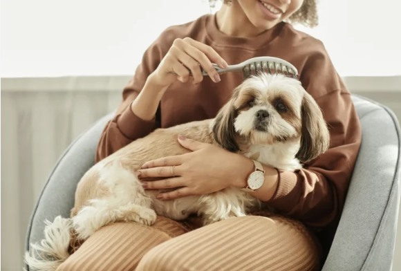
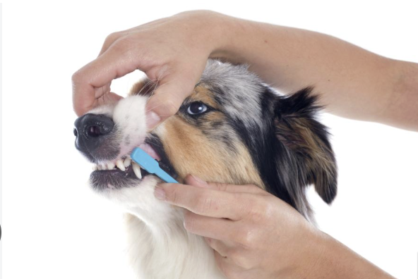

An e.g.
Grooming and Hygiene

|
• Coat Maintenance: Brushing removes dead hair, prevents painful matting, and distributes natural skin oils. The frequency depends heavily on their coat type (e.g., daily for long coats, weekly for short coats). |

|
• Nail Care: Overgrown nails alter a dog's gait, pushing their toes upward and causing chronic joint pain or arthritis. As a rule of thumb, if you hear them clicking on the floor, they need a trim. |
|
 |
• Dental Hygiene: Periodontal disease can lead to bacteria entering the bloodstream, damaging the heart, kidneys, and liver. Ideally, their teeth should be brushed daily with dog-safe toothpaste. |

|
• Ear & Eye Inspections: Checking ears for redness, odor, or debris prevents severe yeast and bacterial infections. Keeping eyes clear of discharge prevents tear-duct irritation. |